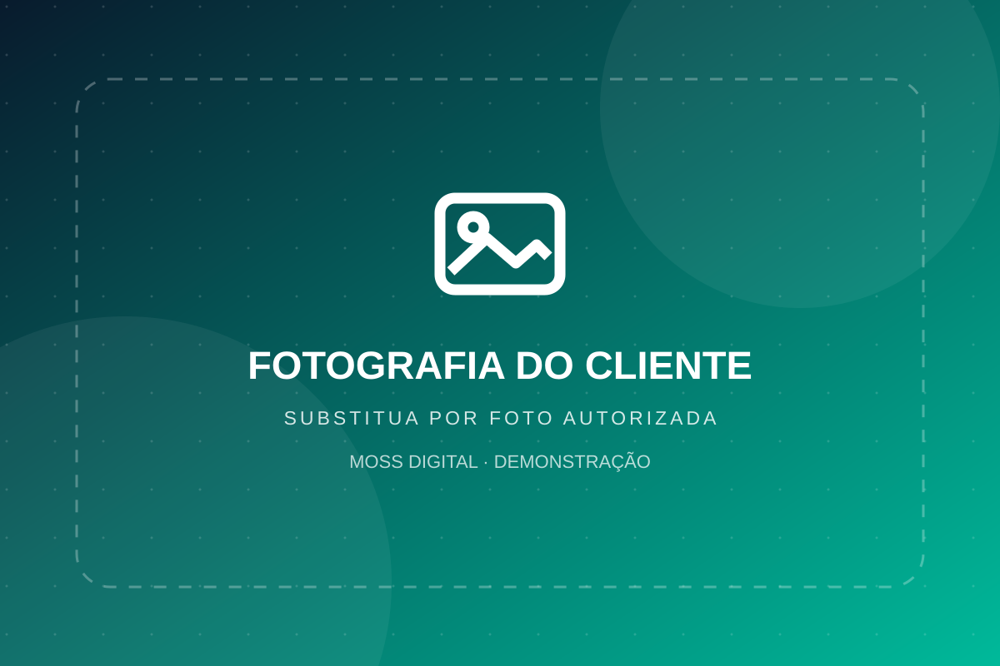

Fluxo organizado
Etapas claras do pedido ao acompanhamento.
Uma experiência digital para laboratórios que apoiam dentistas com processos organizados, tecnologia e comunicação clara.

FOTO DE CAPA · assets/img/capa.webpEtapas claras do pedido ao acompanhamento.
Comunicação objetiva com consultórios.
Processos apresentados com transparência.
Serviços apresentados como exemplos. O laboratório cliente deverá validar técnicas, prazos e materiais.
Soluções estéticas com planejamento e acabamento orientados pelo profissional responsável.
Etapas digitais para organização, desenho e produção de trabalhos protéticos.
Planejamento protético sob prescrição e avaliação do cirurgião-dentista.
Modelos técnicos para apoiar conferência e comunicação com o consultório.
Informe tipo de trabalho e dados técnicos gerais, sem dados sensíveis do paciente.
O laboratório valida material, prazo e viabilidade.
A equipe confirma os próximos passos diretamente no contato.
Os espaços abaixo são reservas de fotos. Coloque seus arquivos autorizados e as imagens aparecem automaticamente.
Solicitação comercial ilustrativa para consultórios e profissionais. Não envie nome, imagem ou histórico de pacientes.
WhatsApp da demo: (11) 94203-8103
Este site é demonstrativo. O envio não cria cadastro, não cobra pagamento e não confirma serviços.
Não. Esta demo não envia nem armazena arquivos ou dados de pacientes.
Não. Os prazos são discutidos e confirmados com o laboratório.
Sim, em projeto futuro com autenticação, banco de dados, controle de acesso e proteção de dados.